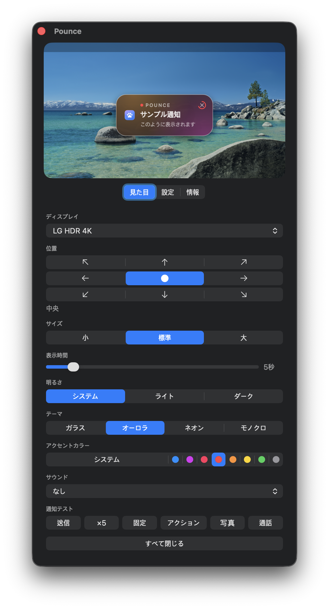

概要
Mac の通知の位置を変更
通知を見逃さないように、目を向けている場所に表示します。
インストール
brew install --cask ojtiger/tap/pounce
スクリーンショット

よくある質問
Mac の設定で通知の位置を変えられませんか？
変えられません。Apple がバナーを右上に固定していて、その設定項目がありません。そのために作りました。
長い通知は最後まで読めますか？
カードの上でスクロールすると、たたまれていた残りがその場で開きます。読んでいる間は消えず、ポインタを外すといつも通り引っ込みます。
中央に出ると邪魔になりませんか？
時間が経てば自動で消えます。ポインタを乗せている間は消えずに待ちます。それでも気になるなら下中央へ。位置は九か所から選べます。
通知の内容が外部に送信されますか？
されません。すべてこの Mac の中で完結します。外に出るのは新しいバージョンの確認だけで、それも設定でオフにできます。
どの Mac で動きますか？
macOS 14 Sonoma 以降。Apple シリコンでも Intel でも動きます。macOS 26 ではシステムのガラス、それ以前ではすりガラスを使います。